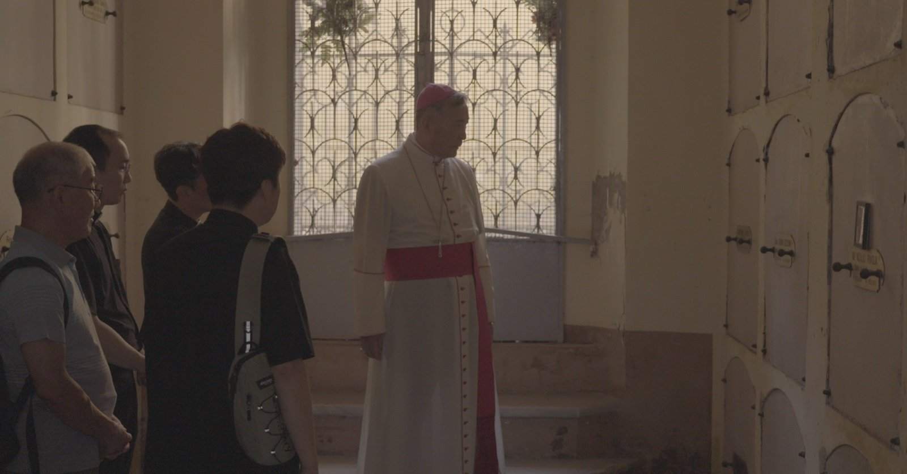
Pitching · IDFA 2026A Prayer Carried toward the Altar 어느 신학생의 기도
Feature documentary · In production · Expected 2027
K-Pitch Day at IDFA · November 2026
- Financing and funds
- Sales agent
- Broadcasters
- Distributors
- Festival programmers
Anamnesis Film · Seoul, since 2012
Now

Pitching · IDFA 2026Feature documentary · In production · Expected 2027
K-Pitch Day at IDFA · November 2026
 DMZ Docs 2026
DMZ Docs 2026
Feature documentary · 2026 · 75 min
International distribution
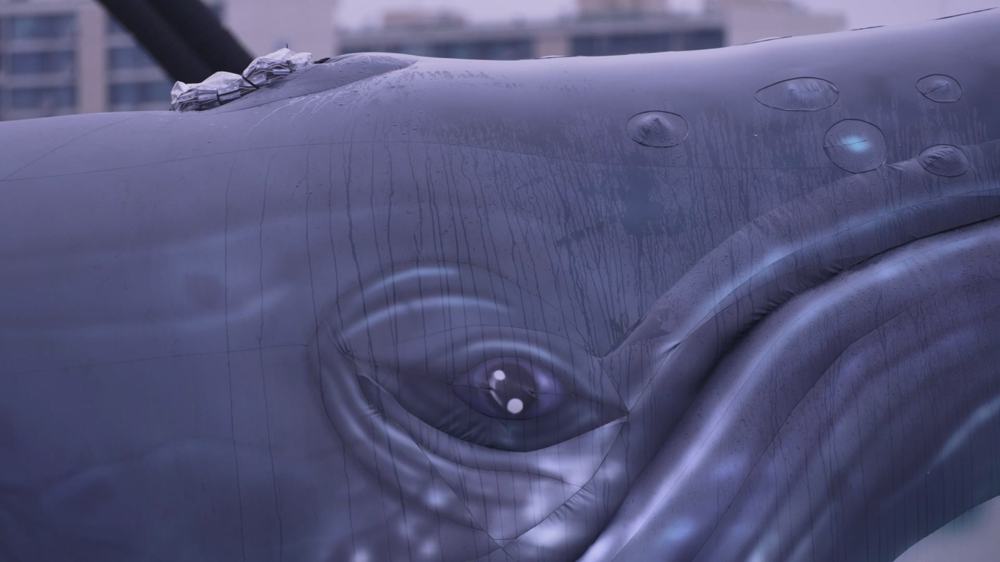
In developmentHybrid documentary · In development · Expected 2028
Co-production
Anamnesis Film is an independent art film studio based in Seoul. We make films that trace how the past lives on in personal and collective memory.
Documentary · since 2012
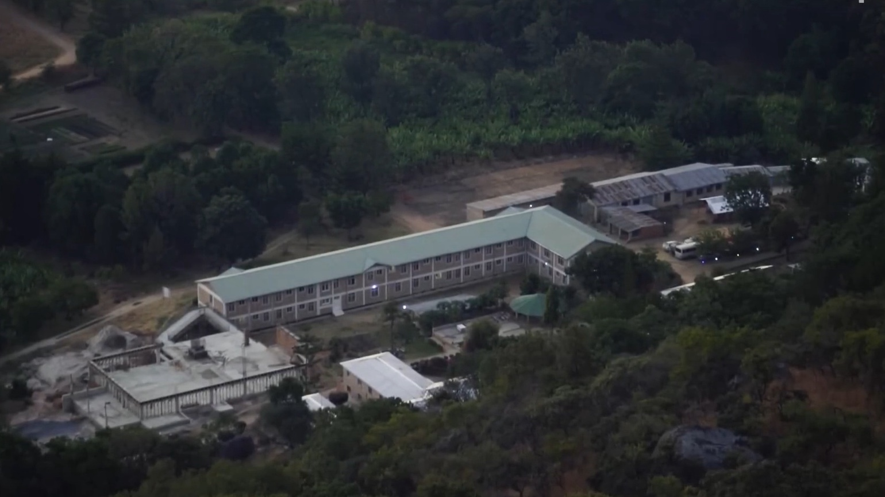
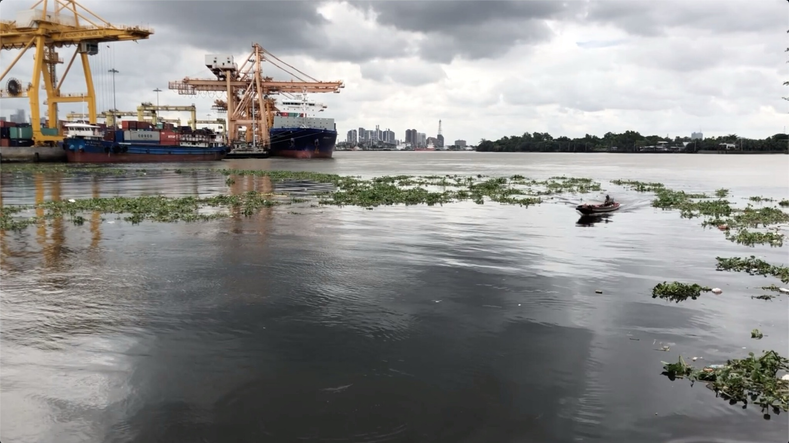
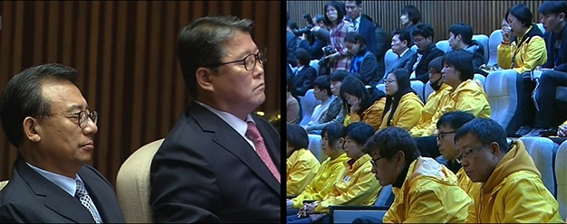
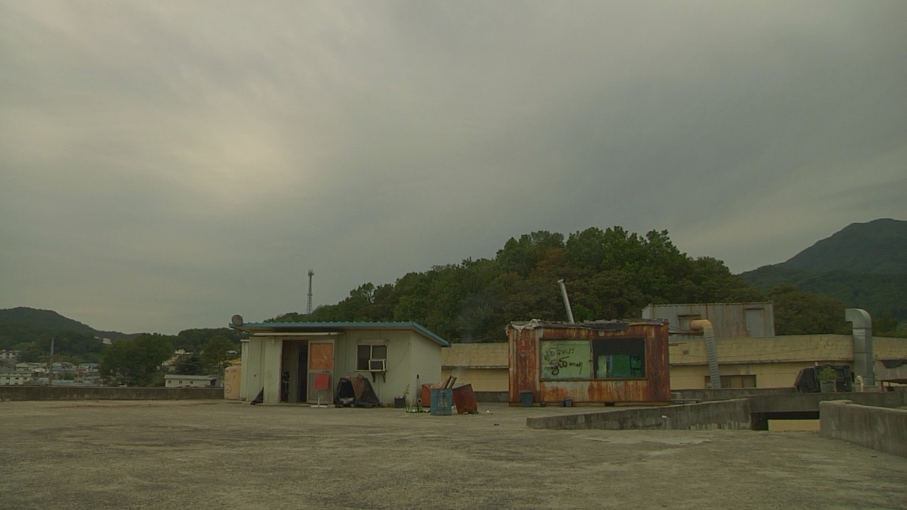

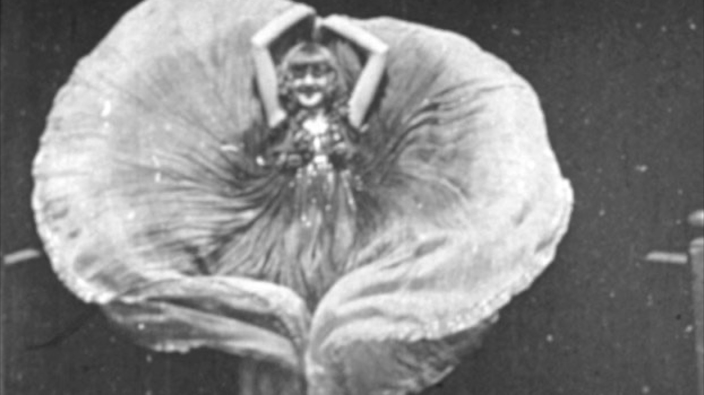
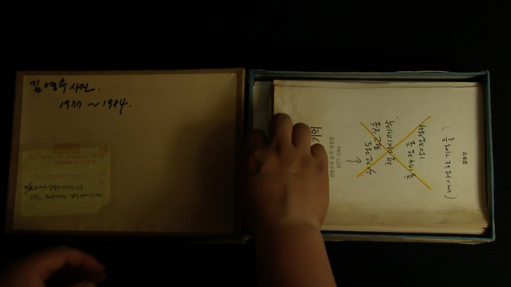
The studio
Anamnesis Film was founded in 2012 on the belief that cinema can give form to the traces of the past that remain in the present. We make films about the events unfolding around us and how they shape the memories of individuals and communities.
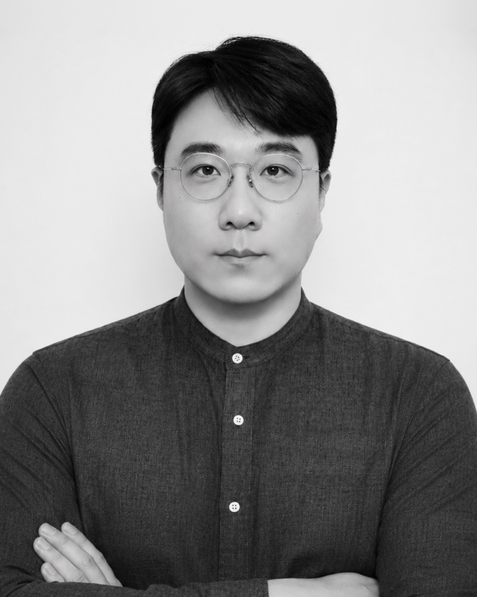
Director · Producer · Cinematographer
Changmin Lee is a documentary filmmaker and film scholar with a background in Catholic theology, documentary filmmaking and film theory. He co-founded Anamnesis Film in 2012. His films as director include Memories of a Photographer and Dear Elephant, and his producing credits include Burmese on the Roof, Hydrangea and Dance, Full of Sound and Fury. He is currently making A Prayer Carried toward the Altar, a feature documentary about two Korean seminarians who arrived in Rome in 1920 and died before they could be ordained. He is a research professor at the Institute for the Arts at Korea National University of Arts.
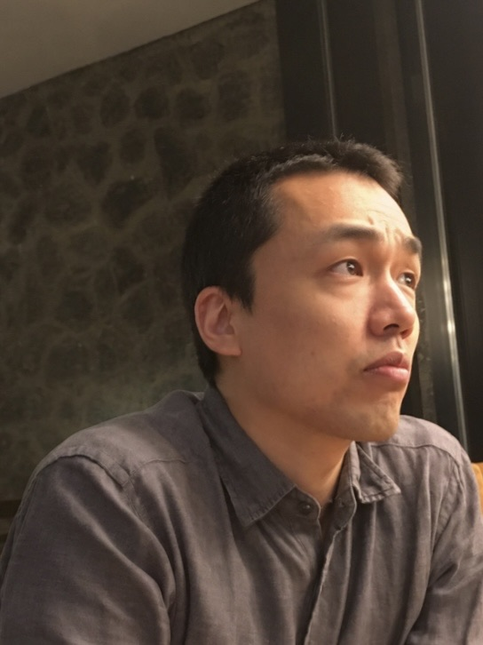
Director · Producer · Writer
Minseok Jo co-founded Anamnesis Film in 2012. He directed The Secret Principle of Things, winner of the New Artist Award at the Seoul International Cinema & Media Art Festival, and Dance, Full of Sound and Fury. He has produced several films by Changmin Lee, including Memories of a Photographer and Dear Elephant, a Special Jury Award winner at the Busan International Short Film Festival, and has worked on many independent films as a cinematographer and assistant director. He also teaches and writes on the principles and practice of classical cinema.
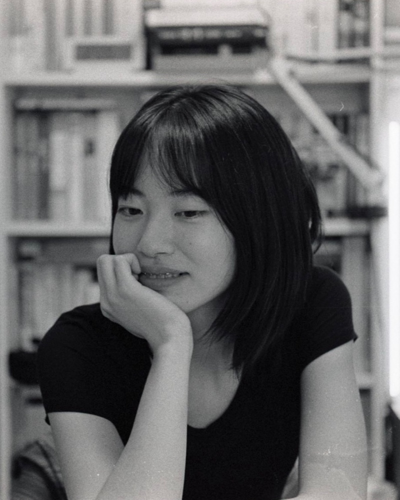
Director · Cinematographer
Based in Seoul, filmmaker Soha Hiroyama-Park was born in Japan and raised in South Korea. Her work explores how individual lives are shaped by larger narratives, quietly observing the moments where language, identity, and inherited narratives intersect and diverge. She directed the short fiction film Lake and I (2022), which screened at the Busan International Film Festival, Daegu Independent Short Film Festival, and Eye Filmmuseum in Amsterdam, among others. Her debut feature-length documentary, Hydrangea (2026), screened at the DMZ International Documentary Film Festival.
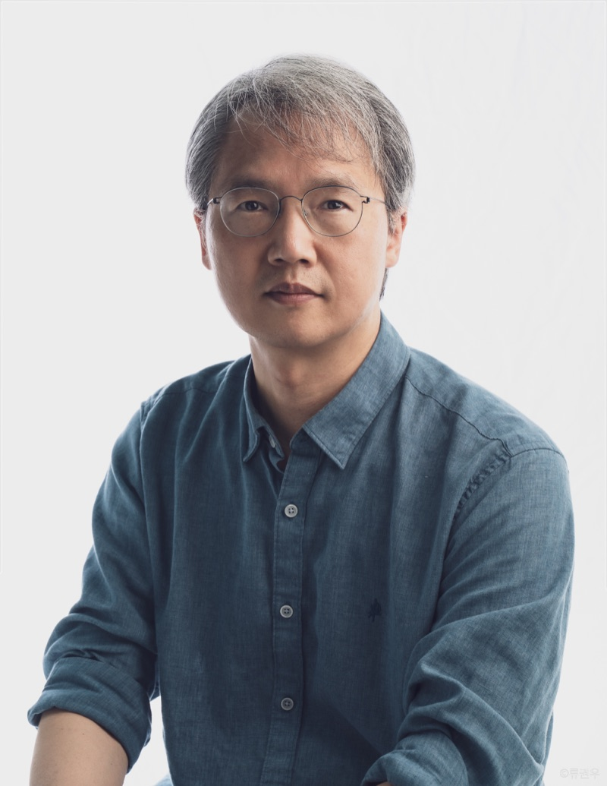
Producer
Sang Yong Kim is an Associate Professor in the Department of Art & Technology at Sogang University, where he teaches undergraduate and graduate students. He studied directing at the Korea National University of Arts and at Sogang’s Graduate School of Media, then philosophy at Sogang’s Graduate School of Theology and theology at Santa Clara University in the United States. He went on to study documentary film and media arts directing at the School of Visual Arts (SVA).
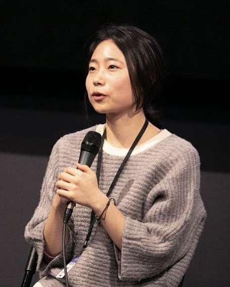
Director · International Distribution
Ji Eun Hwang studied industrial design at KAIST and worked as a UX designer at one of Korea’s largest advertising agencies and at a tech startup before taking a leap: leaving that career behind to make documentaries. Her first feature documentary, Forth and Back (돌아서 제자리로), is a work of direct cinema filmed over three years at Kuma, a youth center in Bucheon. Having recently realized that her work keeps coming back to questions of diaspora, she is now looking for new ground to explore. She joined LiNK (Liberty in North Korea) in 2022, where she is now a senior content producer.
Contact
We’ll be in Amsterdam November 13–18 for K-Pitch Day at IDFA. Write to us to set up a meeting or request a screener.